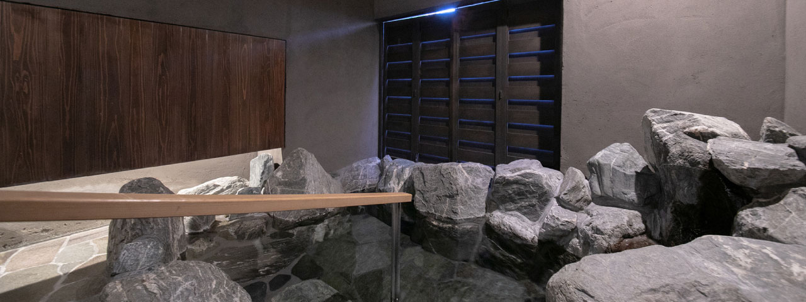
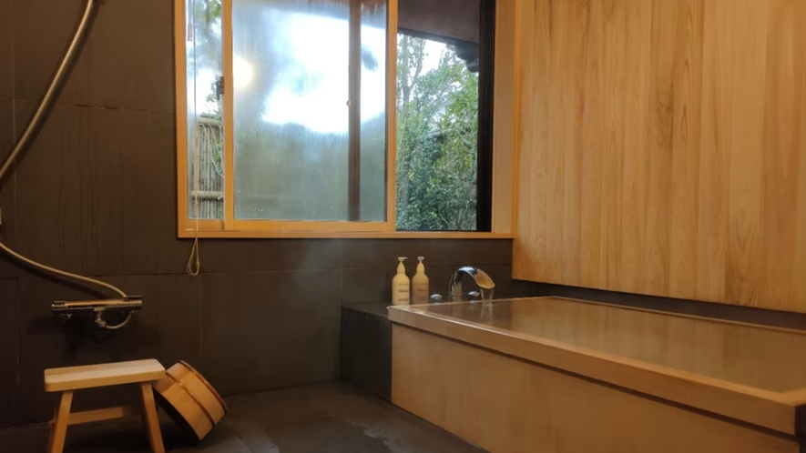
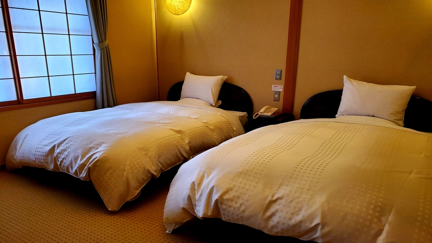
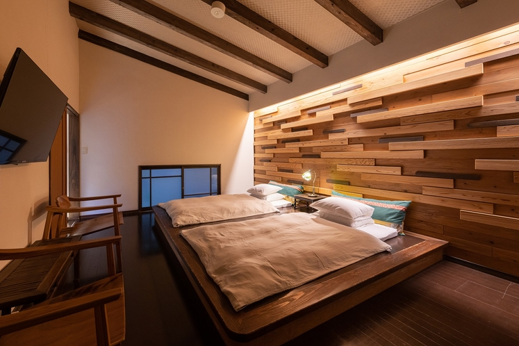
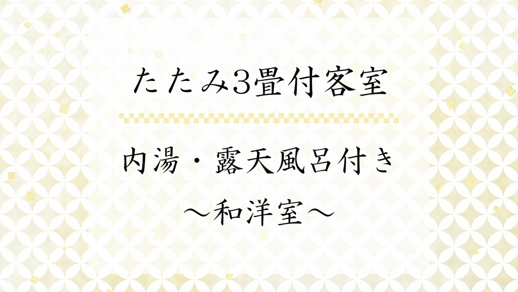
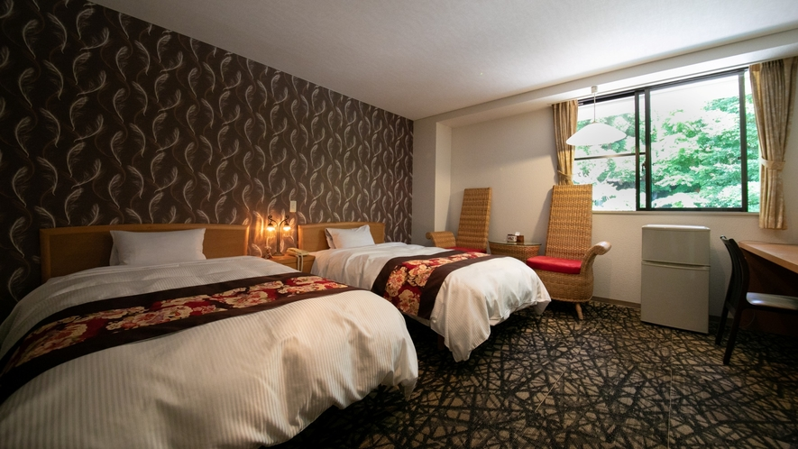
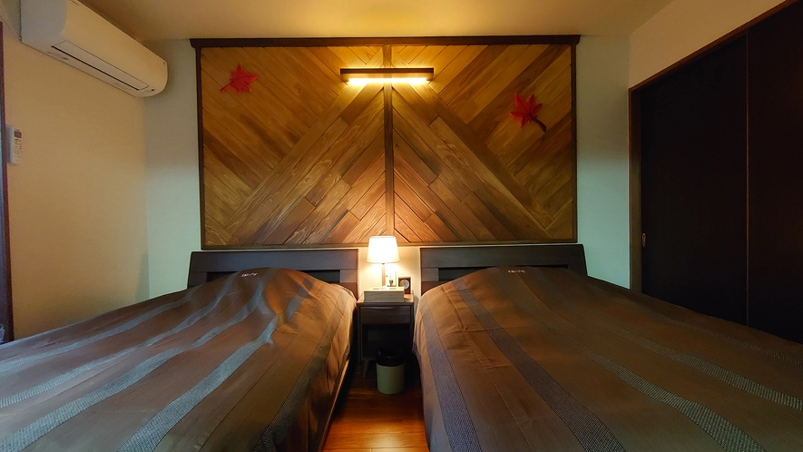
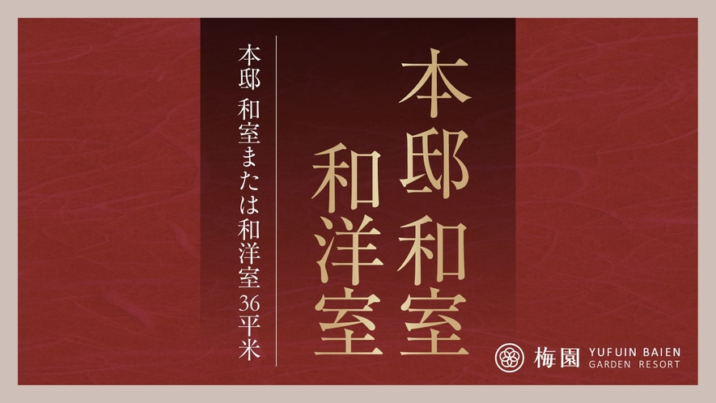
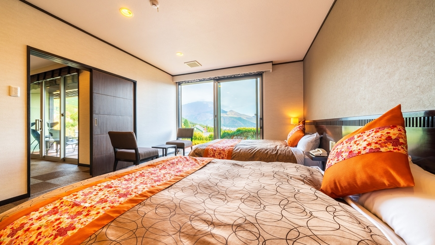

2027년 2월 가족여행유후인 료칸 10곳
사진으로 숙소를 살펴보고 두 출발일의 6인 예산을 비교하세요.
이번 가족여행은 유후인 · 일요일 출발을 추천해요
벳테이 이츠키는 유젠의 실내 바위 온천과 침대방 두 개를 조합할 수 있고, 료칸에서 아침과 저녁을 해결할 수 있어요. 일요일 출발 6인 합계는 9,787,880원으로 토요일보다 740,975원 낮습니다.
비용을 우선하면 벳푸 신안의 일요일 출발이 7,038,580원으로 더 낮아요. 신안은 식사가 별도이고 탕은 1층, 침실은 2층입니다. 이츠키 유젠에도 실내 계단이 있어 어르신의 계단 이용 정도를 함께 고려하세요.
숙소 목록
2.20 토–23 화 / 2.21 일–24 수6인 총액 = 항공 + 하카타 1박 + 료칸 2박 · 첫 숙소는 요청한 객실 조합을 확인한 곳입니다.

사진 5장 보기由布院別邸 樹가족 조건 일치 · 객실별 확인
토요일 출발10,528,855원조건 일치 · 3실 연박 확인
일요일 출발9,787,880원조건 일치 · 3실 연박 확인

사진 4장 보기由布院 玉の湯객실 실내탕
토요일 출발총액 미확인객실별 잔여2인 1실 2박 · 164,900엔부터
일요일 출발총액 미확인조회처 공실 없음

사진 5장 보기由布院温泉 旅亭 田乃倉객실 실내탕
토요일 출발총액 미확인트윈 1실 확인2인 1실 2박 · 188,000엔부터
일요일 출발총액 미확인트윈 1실 확인2인 1실 2박 · 219,600엔부터

사진 5장 보기由布院温泉 おやど 二本の葦束객실별 확인
토요일 출발총액 미확인객실별 잔여 · 조합 미확인2인 1실 2박 · 216,440엔부터
일요일 출발총액 미확인객실별 잔여 · 조합 미확인2인 1실 2박 · 204,340엔부터

사진 5장 보기由布院温泉 由布の彩YADOYAおおはし객실별 확인
토요일 출발총액 미확인객실별 잔여 · 조합 미확인2인 1실 2박 · 68,200엔부터
일요일 출발총액 미확인객실별 잔여 · 조합 미확인2인 1실 2박 · 59,400엔부터

사진 5장 보기由布院温泉 杜の湯 ゆふいん泰葉객실별 확인
토요일 출발총액 미확인객실별 잔여 · 조합 미확인2인 1실 2박 · 95,600엔부터
일요일 출발총액 미확인객실별 잔여 · 조합 미확인2인 1실 2박 · 91,200엔부터

사진 5장 보기由布院温泉 楓の小舎객실 실내탕
토요일 출발총액 미확인조건 맞는 3실 견적 미확보
일요일 출발총액 미확인조건 맞는 3실 견적 미확보
 사진 4장 보기由布院温泉 由布院 寛ぎの宿 なな川
사진 4장 보기由布院温泉 由布院 寛ぎの宿 なな川객실 실내탕
토요일 출발총액 미확인3실 부족2인 1실 2박 · 205,000엔부터
일요일 출발총액 미확인3실 부족2인 1실 2박 · 182,800엔부터

사진 4장 보기由布院 梅園 GARDEN RESORT객실 반노천
토요일 출발총액 미확인조건 객실 부족2인 1실 2박 · 128,260엔부터
일요일 출발7,716,288원객실별 견적 확인

사진 5장 보기由布院温泉 朝霧のみえる宿 ゆふいん花由객실 노천탕
토요일 출발9,815,831원3실 견적 확인
일요일 출발8,652,813원3실 견적 확인
벳테이 이츠키 · 6인 여행 예산
유젠 내부에 계단이 있습니다. 료칸 조식·석식 포함. 실내탕의 넓이는 공식 사진 기준이며 실측은 공개되지 않았습니다.
인천·김해 왕복 항공 + 하카타 호텔 3실 1박 + 료칸 3실 2박
2월 20–23일
료칸 21–23일 · 3실 연박 재고 확인
항공·하카타·료칸 6인 합계10,528,855원객실별 잔여와 비용 내역
- 유젠 · 실내 바위 온천, 세미더블 침대 2개256,000엔2명 · 2박 연속 잔여 1실 · 해당 상품 보기
- 카린 · 침대가 있는 별채195,120엔2명 · 2박 연속 잔여 1실 · 해당 상품 보기
- 야마모모 · 침대가 있는 별채195,120엔2명 · 2박 연속 잔여 1실 · 해당 상품 보기
- 료칸 3실 · 2박 합계646,240엔
- 호텔 닛코 후쿠오카 · 트윈 3실206,250엔2월 20–21일 · 시티사이드 트윈 · 1실 68,750엔 · 식사 없음 · 호텔 상품 보기
- 인천 왕복 · 진에어 4명1,706,000원
- 김해 왕복 · 제주항공 2명724,200원KB국민카드 실적 조건 요금
2월 21–24일
료칸 22–24일 · 3실 연박 재고 확인
항공·하카타·료칸 6인 합계9,787,880원객실별 잔여와 비용 내역
- 유젠 · 실내 바위 온천, 세미더블 침대 2개256,000엔2명 · 2박 연속 잔여 1실 · 해당 상품 보기
- 카린 · 침대가 있는 별채195,120엔2명 · 2박 연속 잔여 1실 · 해당 상품 보기
- 야마모모 · 침대가 있는 별채195,120엔2명 · 2박 연속 잔여 1실 · 해당 상품 보기
- 료칸 3실 · 2박 합계646,240엔
- 호텔 닛코 후쿠오카 · 트윈 3실140,400엔2월 21–22일 · 가든사이드 트윈 · 1실 46,800엔 · 식사 없음 · 호텔 상품 보기
- 인천 왕복 · 진에어 4명1,626,000원
- 김해 왕복 · 제주항공 2명688,800원KB국민카드 실적 조건 요금
2026년 11월 10일 객실별 조회 · 세 객실은 개별 예약하며 재고는 결제 시점에 결정됩니다.
100엔당 950원 환산 · 같은 날 조회한 김해 항공은 KB국민카드 실적 조건 · 현지 교통, 별도 식비, 현지 징수세 및 항공 부가서비스 별도.